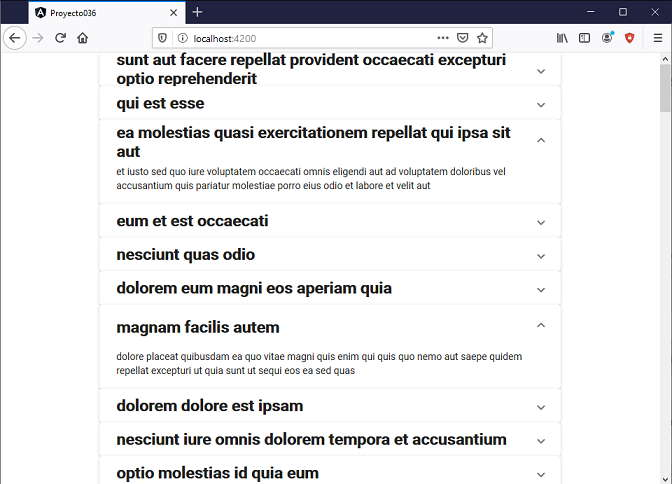

La componente mat-expansion-panel implementa un panel con un texto que al ser presionado por el usuario se expande para poder ver su contenido.
Tiene la posibilidad que al encerrarlo entre las etiquetas mat-accordion cuando se abre el contenido de un 'mat-expansion-panel' se cierra si hay actualmente otro abierto.
Recuperar del servidor jsonplaceholder.typicode.com un archivo JSON con los datos de 100 post de un blog ficticio.
Disponer cada título en una componente mat-expansion-panel y el contenido mostrarlo cuando se presiona la componente.
Crearemos primero el proyecto
ng new proyecto036
Procedemos a instalar todas las dependencias de Angular Material ayudados por Angular CLI mediante el comando 'add':
ng add @angular/material
Crearemos el servicio que recuperará desde el servidor público los datos de todos los post:
ng generate service postblog
Modificamos el archivo para recuperar los datos del servidor, debemos importar la clase 'HttpClient' e inyectar al constructor la referencia de un objeto de dicha clase al cual llamamos 'http':
import { Injectable } from '@angular/core';
import { HttpClient } from '@angular/common/http';
@Injectable({
providedIn: 'root'
})
export class PostblogService {
constructor(private http: HttpClient) { }
retornar() {
return this.http.get("https://jsonplaceholder.typicode.com/posts");
}
}
El método 'retornar' será llamado desde la componente principal, este método mediante el objeto de la clase HttpClient llama al método get y le pasa como parámetro la URL del servidor que retornará el archivo JSON con los datos de 100 post.
Modificamos el archivo app.module.ts importando la clase HttpClientModule para poder emplear la clase 'HttpClient' que definimos en la clase 'PostblogService'. Además importamos MatExpansionModule:
import { BrowserModule } from '@angular/platform-browser';
import { NgModule } from '@angular/core';
import { AppComponent } from './app.component';
import { BrowserAnimationsModule } from '@angular/platform-browser/animations';
import { MatExpansionModule } from '@angular/material/expansion';
import { HttpClientModule } from '@angular/common/http';
@NgModule({
declarations: [
AppComponent
],
imports: [
BrowserModule,
BrowserAnimationsModule,
MatExpansionModule,
HttpClientModule
],
providers: [],
bootstrap: [AppComponent]
})
export class AppModule { }
Modificamos el archivo app.component.ts:
import { Component, OnInit } from '@angular/core';
import { PostblogService } from './postblog.service';
@Component({
selector: 'app-root',
templateUrl: './app.component.html',
styleUrls: ['./app.component.css']
})
export class AppComponent implements OnInit {
post:any;
constructor(private postblogService: PostblogService) { }
ngOnInit() {
this.postblogService.retornar()
.subscribe(result => this.post = result)
}
}
Al constructor inyectamos un objeto de la clase 'PostblogService':
constructor(private postblogService: PostblogService) { }
En el método ngOnInit llamamos al método 'retornar' definido en la clase 'PostblogService', como sabemos la recuperación de datos de un servidor se hace de forma asíncrona, para capturar los datos retornados del servidor procedemos a llamar al método 'subscribe' del objeto que retorna la clase 'PostblogService'. En el método 'subscribe' procedemos a actualizar el atributo 'post' con el archivo en formato JSON, luego Angular se encarga de actualizar la vista, es decir el archivo 'app.component.html':
ngOnInit() {
this.postblogService.retornar()
.subscribe(result => this.post = result)
}
Modificamos el archivo app.component.html:
<div style="width: 70%;margin:0 auto" *ngIf="post!=null">
<mat-expansion-panel *ngFor="let p of post">
<mat-expansion-panel-header>
<mat-panel-title>
<h2>{{p.title}}</h2>
</mat-panel-title>
</mat-expansion-panel-header>
{{p.body}}
</mat-expansion-panel>
</div>
Se utilizan una serie de etiquetas definidas en Angular Material para componer el panel de expansión: mat-expansion-panel, mat-expansion-panel-header y mat-panel-title.
Mediante la directiva *ngFor generamos los 100 post almacenados en JSON.
Si ejecutamos la aplicación tenemos como resultado:
Podemos probar esta aplicación en la web aquí.
Si encerramos los paneles de expansión con la etiqueta 'mat-accordion', luego solo uno de los paneles puede estar desplegado al mismo tiempo:
<div style="width: 70%;margin:0 auto" *ngIf="post!=null">
<mat-accordion>
<mat-expansion-panel *ngFor="let p of post">
<mat-expansion-panel-header>
<mat-panel-title>
<h2>{{p.title}}</h2>
</mat-panel-title>
</mat-expansion-panel-header>
{{p.body}}
</mat-expansion-panel>
</mat-accordion>
</div>